体調不良のきっかけとゆーものは特になくて、それこそ街角でパッと旧友に会ったかのよーなハプニングという感じとゆーか、なんつーかまったく思いも寄らない出来事で、今思うと、「それってヤバいじゃん！」って思う体調だったにも関わらず、「なんか今日は変？かも？」とゆーまったくの危機感の無さ。
まー大病とかってそういうものなのかもしらん？
とにもかくにも、発症直後と思われのは、会社の昼休み。
近所のスシローに会社女子で行ったとき。
いつもなら6皿ぐらいを食べるのに、なぜだか3皿。
皿の流れてくるタイミングが悪くてお腹が変にいっぱいになっちゃったなー…ってその時は思っていたのだけど、一緒に食べたメンバーの一人が私に対し「季節の変わり目だから、体調くずさないようにね」と一言。
端から見るとちょっとヘンかも？って思われていたのかも。
事実、会計時には冷や汗と軽い貧血。顔色は悪かったと思われ。
体調不良のきっかけとゆーものは特になくて、それこそ街角でパッと旧友に会ったかのよーなハプニングという感じとゆーか、なんつーかまったく思いも寄らない出来事で、今思うと、「それってヤバいじゃん！」って思う体調だったにも関わらず、「なんか今日は変？かも？」とゆーまったくの危機感の無さ。
まー大病とかってそういうものなのかもしらん？
とにもかくにも、発症直後と思われのは、会社の昼休み。
近所のスシローに会社女子で行ったとき。
いつもなら6皿ぐらいを食べるのに、なぜだか3皿。
皿の流れてくるタイミングが悪くてお腹が変にいっぱいになっちゃったなー…ってその時は思っていたのだけど、一緒に食べたメンバーの一人が私に対し「季節の変わり目だから、体調くずさないようにね」と一言。
端から見るとちょっとヘンかも？って思われていたのかも。
事実、会計時には冷や汗と軽い貧血。顔色は悪かったと思われ。
{kind=link}
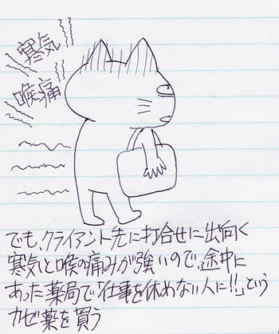
入院することになった9月は、全体的に体調が狂ってた。 微熱はフツーだったし、9月のあたまには首のリンパ腺を腫らして40度近い熱を出してたし、目からは膿を出したりしてた。当日も喉には痛みがあったけど、その9月あたまのビョーキが引きずっているんだろーなーって思ってた。 普段丈夫なもんだから、時間が経てばどーにかなるよーな感じがしてたわけです。実際、前回39度越えの熱を出していたときも、ふらつきながらも打合せをして、作業してたし。 というわけで、身体のつらさはどんどん積み重なっていくのだけど、仕事は忙しいからこなしていかなくてはならないというわけで、打合せに移動。 寒気と喉の痛み、それに血の気が引いてしびれるような貧血感（？）があった。 「ちょっとキツいかな？」と思いつつ、まだ危機感も甘く、薬局でルルアタックIB購入。{kind=link}
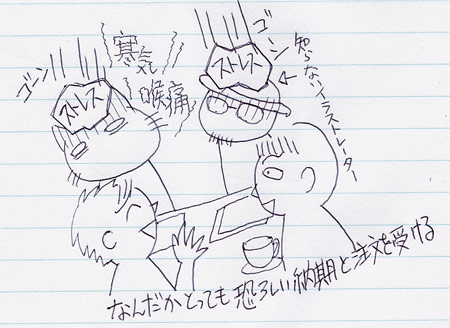
打合せ先に到着。 もともと無茶がベースのクライアントなのだけど、60%ぐらい状況ひっくり返して、 明後日にはある程度形にしたものを見たいとゆーてくる。えー。 変な汗が出て、きっつい動悸。 でも、終わらない仕事は無い、今までも山場は乗り越えた！…と気合いを入れるが、とにかくしんどい。{kind=link}
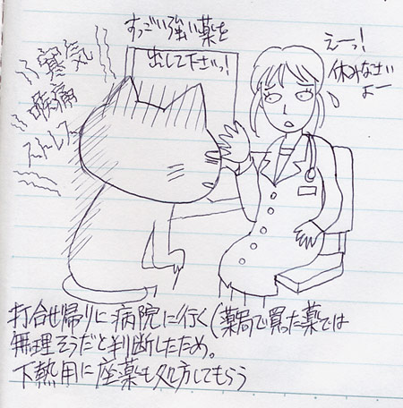
打合せ後は自宅作業に切り替える予定で自宅方面に移動。 これは熱が出てるかな…と思い、自宅近くのクリニックで受診。 扁桃腺がかなり腫れていることを指摘され、会社は休むように言われるけど、んなの無理だーーー。 明後日に向け、徹夜も覚悟をしていたので、とにかく効く薬の処方を懇願。 しぶしぶ処方。{kind=link}
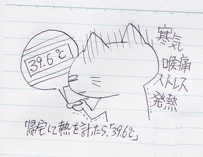
自宅着。 体調悪さが盛り上がってきた。 あたまの中と身体のあちこちでわっしょいわっしょいお祭り騒ぎがはじまっている。体温は39.6度。 高いな…と思いつつ、前回はもっと高かったから、解熱剤を飲めばどうにかなるかなと。 自宅作業を少々。イラストレータからの原稿が上がってこないと動けないこともあり、 明日の私にバトンを渡すことにして就寝。{kind=link}
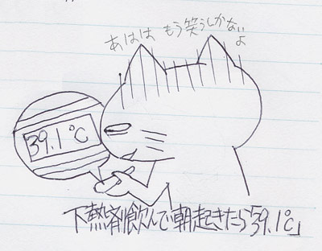
起床。熱は39.1度。 寝る前に飲んだ解熱剤の効果が切れているから仕方がないとはいえ、朝からお祭り体温は勘弁してほしい。{kind=link}
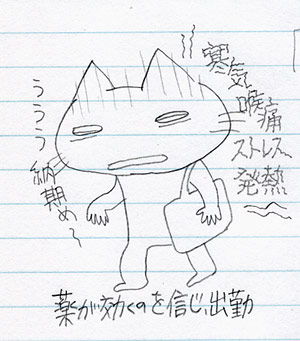
薬を飲んで、出勤。 家を出るときはほんとに辛かった。 這って出ると言ってもおかしくないぐらいに、でろんと足腰が引きずられて、ナメクジのようにぐねぐねと左右に身体はゆれてしまう。 けれども「今日は徹夜かもなぁー」とゆー状況だったので、あたまの中は仕事の工程等々でぐるぐる。{kind=link}
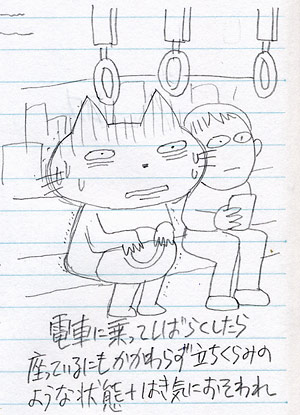
電車に乗ってしばらく。 座っているにも関わらず、とにかくつらい。 身体をぎゅうっと握りつぶされて、サウナに突っ込まれているような気分。 体調が悪くて、身体がだるいとゆー状況ではなかった。とにかくひたすらに殴りつけられて、それでも立って戦わなくてはいけないという感覚。 頑張れワタシ！頑張れワタシ！と、念仏やら呪文やらを唱える。 効かん。 と、こみ上げる吐き気。あー…これはまずい。 吐き気と共に、手足がしびれて目の前は砂嵐。{kind=link}
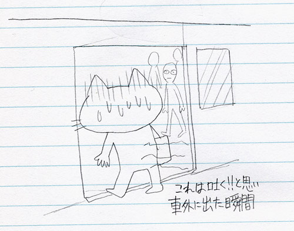
…とここからはちょっと記憶が怪しいのだけど、とにかく途中下車をした。 吐きそうだったし、とにかく電車に乗って居られなかった…のだと思われ。{kind=link}
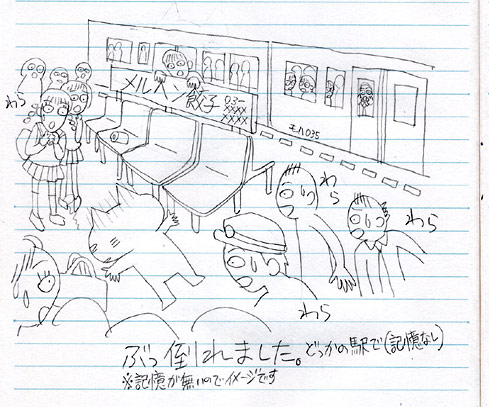
で、倒れた。 どこの駅でどのように倒れたのかさっぱり記憶が無いのだけど、所々で覚えているのは 男性2人が救護をしてくれたということ。 どこの駅だったかしばらく判らなかったのだけど、入院中の医師の話で「本八幡」だったことが判明。 9月28日に本八幡で救護をしてくれた男性。ホントにホントにありがとうございました。 一歩間違えたら、電車とホームに挟まれるということもあったのだなぁ…と思うとぞっとする。 倒れどころ（？）が良かったのか頭も打たず、脚にすこしアザができていただけだったというのもラッキーだった。 人は小さなラッキーの積み重ねで生かされているってどこかで聞いたことがあるけれど、本当にその通り。{kind=link}
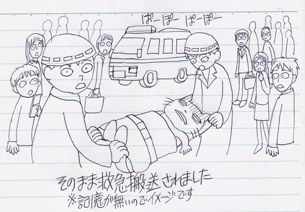
そして救急搬送。 ヒトの生き死に、ドラマを数多く乗せたストレッチャーに乗ることに。 所々で記憶はあるけど、かなり怪しい。 けれども、病院に運ばれたときに見えた曇り空が、やけに記憶に濃く残ってる。{kind=link}
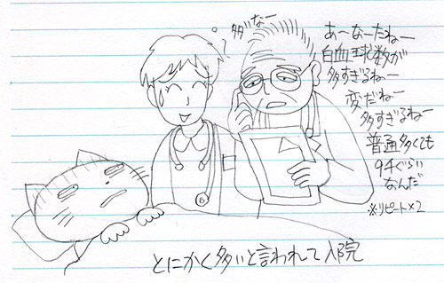
受け入れ先の病院に到着後、処置室に運ばれたころから意識がはっきりしてきた。 が、ここで自分の状況に血の気が引く。 あぁーーー！ しかし、頭をまわせどまわせど、まわらない。 とゆーか、まわすという機能がフリーズしている。何をすべきなのか。 ふわふわふわふわ。着地点が見つからない情報処理。 再起動を繰り返しても、セーフティモードで立ち上げても、いっこうにデスクトップが出てこない。 仕事！どうにかしなくちゃ！ …結果、どうにかこうにか仕事をバトンタッチできそうな同僚に電話をした。…したとゆーかデロデロと状況を伝えただけなのだけど、まったく伝わっていなかったのではないかと思う。 自分がどんな病院にいるかもわかんなかった上に、何がどうしてるかを正確に伝えられない。けれどもポーンと異次元に連れてこられたような興奮。 ああ、ごめん。本当にごめん。 その後、バトンタッチをした悲劇の同僚は恐ろしい徹夜天国に見舞われてしまった。 と、話しを戻して、処置室。 血液検査の結果がとにかく悪くて、入院宣告。 その時は白血球数とCRP（炎症反応）だけを強調されたのだけど、後日見た当時の血液検査結果はめちゃくちゃ！ 異常値の★印で星座ができそうなぐらい。 さらっと2週間の入院を告げられたのだけど、そういうことか…と、検査結果で納得。 いままで自分は丈夫で、「ガッツ」と「やる気」と「ファイト」と「気合い」みたいな言葉を背負っていかないといけないような気がしていたけど、ああ、もうそういうのは引導を渡して、違う道を探さないといけないのか。 入院宣告とともに、軌道修正ともいえるような指針の変更をぼんやりと考える2週間となりました。